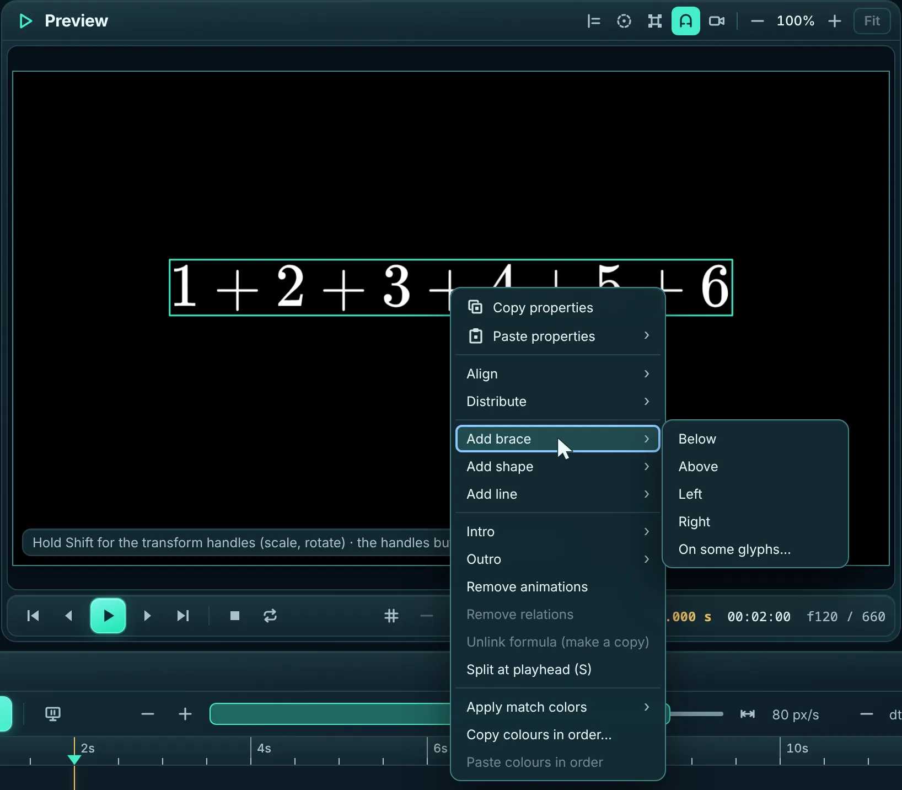
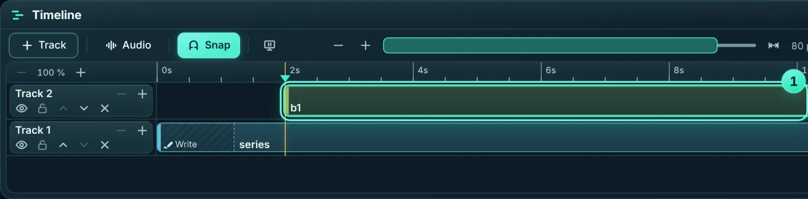
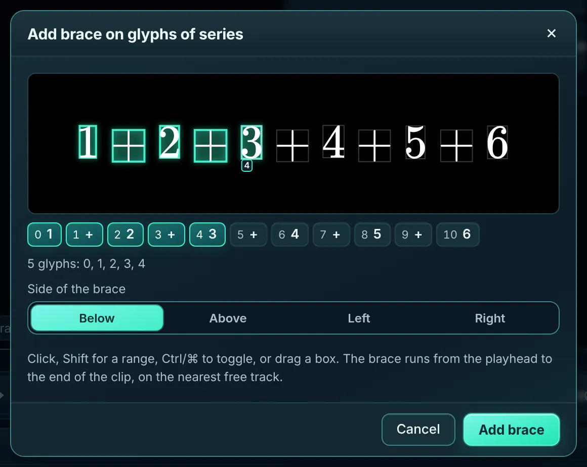
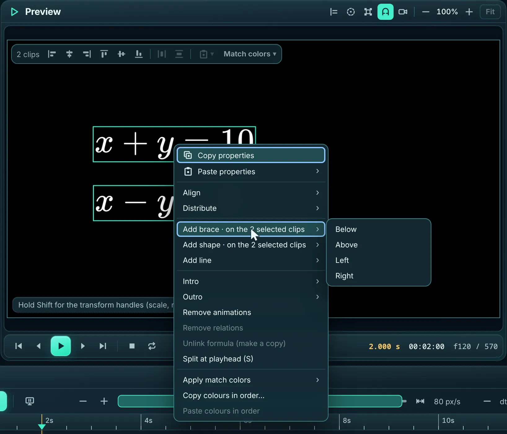
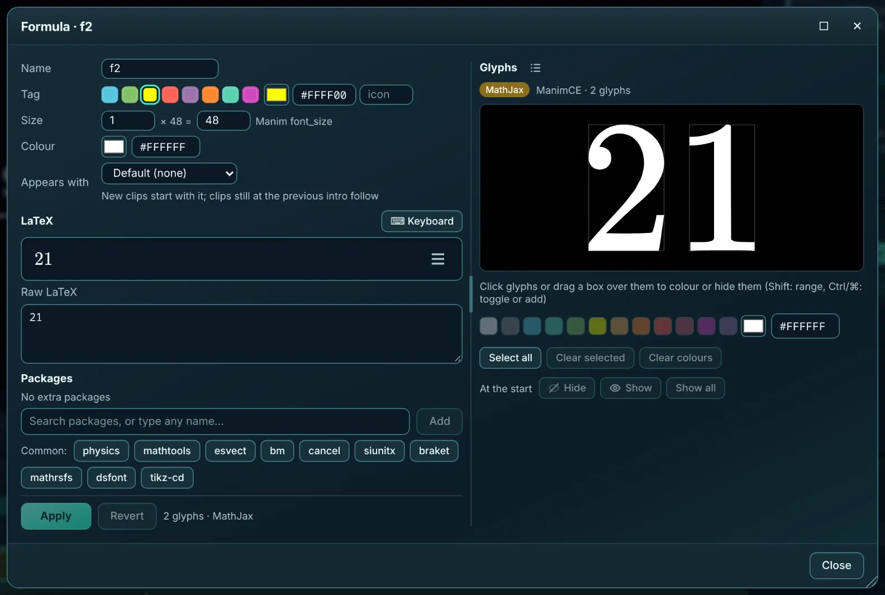
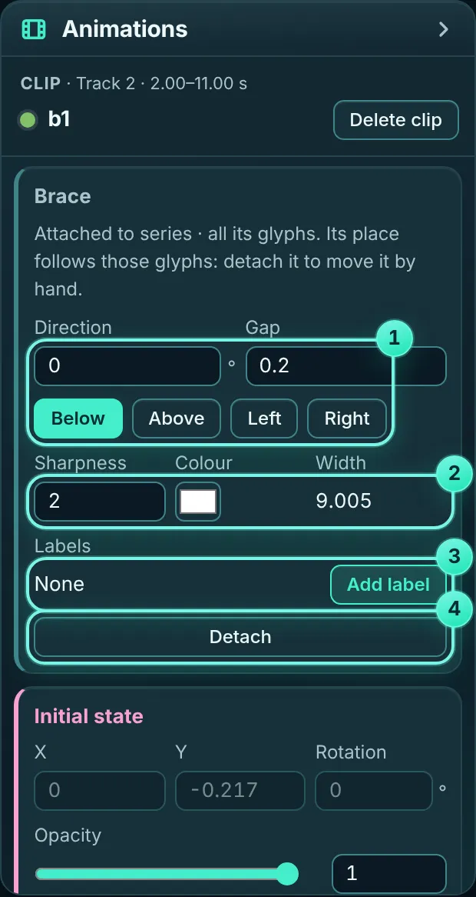
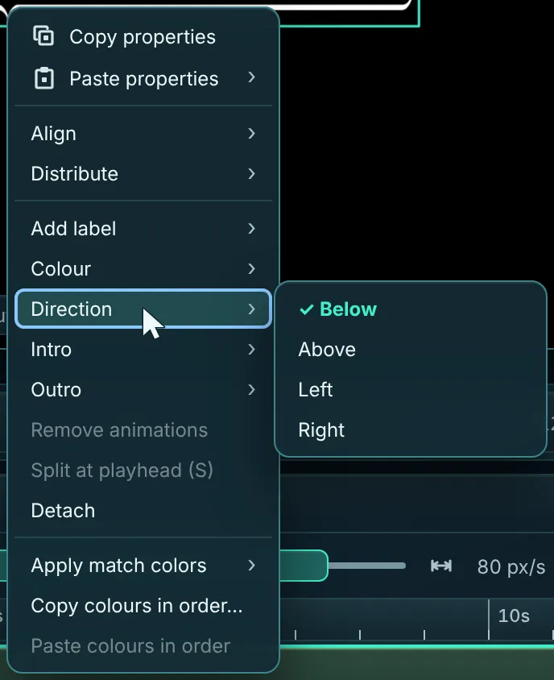

Braces
A brace marks a part of a formula and names it. You add one to a clip, over the whole formula, over some of its glyphs or over several clips, hang a label at its tip, and animate it like any other object of the timeline.
A brace is Manim's Brace. The editor fits it to the glyphs it hangs on, and the exported scene builds it the same way (In the Python). This page shows every way to add one, what its panel and its menu offer, and how to make it come and go.
Adding a brace
Right-click a formula or a text, in the Preview or on its clip in the timeline. Choose Add brace ▸ Below, Above, Left or Right.

A brace is an object of its own, named b1, b2… with a clip of its own. The Creator does not list it: it lives with its clip, and goes with it or with the clip it hangs on.
The new clip runs from the playhead to the end of the clip it hangs on. When the playhead is inside that clip's intro, or outside the clip, it starts where the intro ends instead. It goes on the nearest free track in front of the formula's, and a new track opens right above it when none has room.

b1 (1) on the track above the sum's. It has no intro and no outro: a brace is there when its clip starts.Choosing a side
Below, Above, Left and Right are Manim's DOWN, UP, LEFT and RIGHT. Behind them a brace points in a direction in degrees, counter-clockwise from below: 0 is below the glyphs, 180 above, −90 on their left and 90 on their right. Any other number tilts the brace to that angle.
The Direction field of the Brace section takes any number, not only those four. Here the same letter has braces at 45, 135, −135 and −45 degrees.
Change the side later in the Brace section (The Brace section) or in the brace's menu (The brace's own menu).
Over some glyphs
A brace does not have to cover the whole formula. Pick the glyphs it hangs on:
- Hold Alt and click a glyph in the Preview to pick it. Click it again to take it out. Alt+Shift+click picks a range, and Alt+drag draws a rectangle that picks every glyph it touches. Esc clears the pick.
- A bar appears in the corner of the Preview and says what is picked. Open Brace ▾ and choose a side.
1+2+3 picks five glyphs; Brace ▾ ▸ Below puts the brace under them.The picked glyphs are drawn in the colour of the picks, yellow to begin with (Preferences ▸ Glyph selection colour changes it). Picking glyphs has the rest of the gestures.
Two other ways lead to the same brace:
- Right-click the formula in the Preview while some glyphs are picked: the entry now reads Add brace · on the selected glyphs. A right-click on a picked glyph has Add brace › as well. On the timeline, the menu of the formula's clip braces the whole formula, and its On some glyphs… opens the dialog with the picked glyphs chosen.
- Add brace ▸ On some glyphs… opens a dialog with the glyphs of the clip. Click a glyph, Shift+click for a range, Ctrl+click to toggle one or drag a box; choose the side, then press Add brace.

Over several clips
A brace can also span clips: the two lines of a system of equations, a formula and a text, a shape and a formula. Select the clips, then right-click one of them, in the Preview or on the timeline. Add brace now puts one brace over all of them, as Manim's Brace(VGroup(…)) does. In the Preview's menu the entry reads Add brace · on the 2 selected clips.

- The entry is greyed out, with the reason in its tooltip, when the clips are never on screen together.
- A brace is never braced: with a brace among the selected clips there is no Add brace. A shape takes a brace, on the whole of it.
- Glyphs picked in several formulas with Alt work the same way: Brace ▾ puts one brace over all of them.
- Delete one of the clips and the brace stays where it was, detached from all of them. A brace that hangs on one clip only goes with it.
Labels
A brace can carry a label: a formula or a LaTeX text at its tip. Right-click the brace in the Preview, or its clip on the timeline, and choose Add label ▸ Formula or Text (LaTeX). The Add label button of the Brace section does the same.

21, press Apply and close the editor: the label is in the scene.The label comes in with the brace, fading in, and sits where Manim's brace.put_at_tip(label) puts it. It follows the brace when you point it or space it. Its own section, Label, sets the gap to the tip, or Manim's gap, the one Brace.get_tex leaves: 0.25 in ManimCE, 0.1 in ManimGL.
Apart from that, a label is a formula like any other. It has its intros, its colours, its relations and its Morph blocks, and it goes with its brace. A new label takes the size that Preferences ▸ Standard scale… gives to its kind. An existing label keeps its size until Apply to all formulas or Apply to all texts in that dialog gives every object its scale (Finding and organizing).
The Brace section
Select the brace's clip and open the Timing tab of the Animations panel: its Brace section has what the brace is made of.

- Direction in degrees and Gap, with the four buttons for the sides. The gap is Manim's
buff, 0.2 by default. - Sharpness, Colour and Width. Sharpness is ManimCE's: how long the straight runs of the brace are for its width (2 is Manim's). ManimGL draws its brace from a font and ignores it. The width is read from the glyphs: you do not set it.
- Labels lists the labels of the brace (none yet); Add label adds one.
- Detach frees the brace where it is: it keeps its shape and moves like any other clip from then on. Until then it does not drag in the Preview, because its place follows its glyphs.
A brace has no size to set: its width comes from what it hangs on.
The brace's own menu
Right-click the brace in the Preview, or its clip on the timeline, for the quick changes.

- Add label ▸ a formula or a LaTeX text at the tip.
- Colour ▸ the Manim colours as swatches, and a field for any other colour in hexadecimal.
- Direction ▸ Below, Above, Left or Right; the current side is ticked.
- Intro ▸ and Outro ▸ the animation its clip starts and ends with. The current one is ticked; None (appear) and None (disappear) take it away.
- Remove animations takes off the intro, the outro and every block at once, as one undo step.
- Detach as in the panel.
Animating a brace
A new brace has no animation. Give it one in Intro ▸ and Outro ▸. GrowFromCenter is Manim's for a brace, and FadeIn, Write, Create and DrawBorderThenFill work too; the outros are ShrinkToCenter, FadeOut, Unwrite and Uncreate. Drag the inner edge of the intro or the outro on the timeline to make it longer or shorter (Appearing and disappearing).
A brace is one piece, so its Transform block moves the whole object: its position, scale, rotation, flips, opacity and colour. There is no part to transform, no Morph and no relation. The Emphasis blocks (Indicate, Wiggle, Circumscribe, Flash, FocusOn) work on it as on any object (Animation blocks).
A brace does not follow its formula
The formula below moves at 3.6 s with a Transform of the whole formula. The brace was fitted at 2 s, so it stays where it was. At 6 s a Transform of its own, with the same move, brings it along.
To move a formula and its brace together, give both the same Transform. To make a brace that never follows the formula at all, Detach it and move it by hand.
In the Python
The exported scene builds a brace on the glyphs it hangs on, when its clip starts, and puts its label at its tip. This is the first brace of the example above in ManimCE:
b1 = Brace(VGroup(*series_g[:5]), DOWN, buff=0.2, color="#58C4DD")
b1.set_z_index(5)
b1.put_at_tip(f2, buff=0.25)
# 2 s – 3 s: b1 grow_from_center, f2 fade_in
self.play(GrowFromCenter(b1), FadeIn(f2), run_time=1)b1 is the brace and f2 its label, the names the editor gives them. series_g holds the glyphs of the formula in the editor's order, which is what makes [:5] the first five. A brace over several clips is built on a VGroup of them, and a brace on a shape on the shape itself. In ManimGL the same line is Brace(VGroup(*series_g[:5]), DOWN, buff=0.2) followed by set_color, and the label's gap is its own 0.1.
Where to go next
- Shapes frame glyphs with a box, a circle, an underline, a cross or a highlight, the way braces do.
- Lines and arrows point at a formula or run between two of them.
- Picking glyphs explains the Alt pick that chose the glyphs here.
- Appearing and disappearing and Animation blocks cover what a brace's clip can be given.